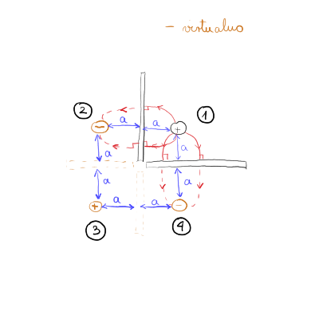

6. vaje iz Elektromagnetnega polja
Table of Contents
… nadaljujemo od zadnjič
1. Točkasti naboj v kotu med dvema pravokotnima prevodnima ploščama
Točkasti naboj \( e \) sr nahaja v kotu med dvema razsežnima prevodnima ozemljenima ploščama, ki sta pravokotni drga na drugo, tako da je od vsake oddaljen za razdaljo \( a \).
- Izračunaj kvadrupolni moment nastale porazdelitve nabojev.
- Kako se obnaša potencial električnega polja v veliki oddaljenosti \( r \), kjer je \( r \gg a \)?
Potencial električnega polja, ki ga povzroči lokalizirana porazdelitev nabojev v točki \( \vec{r} \), v multipolnem razvoju zapišemo kot
\[ U \left( \vec{r} \right) = \frac{1}{ 4\pi \epsilon_0} \left( \frac{e}{r} + \sum\limits_i^{} p_i \frac{ r_i}{r ^3} + \sum\limits_{i j}^{} Q_{ij} \frac{r_i r_j}{r ^5} \right), \]
kjer so \( p_i = \int\limits_{}^{} \rho \left( \vec{r} \, ' \right) \vec{r}_i \, ' \, \mathrm{d} ^3 \vec{r} \, ' \) komponente vektorja dipolnega momenta in
\begin{equation} \label{eq:1} Q_{ij} = \int\limits_{}^{} \rho \left( \vec{r} \, ' \right) \left[ 3 r_i ' r_j ' - \delta_{ij} r' ^2 \right] \, \mathrm{d} ^3 \vec{r} \, ' \end{equation}komponente tenzorja kvadrupolnega momenta, \( \rho \left( \vec{r} \, ' \right) \) pa je prostorninska gostota naboja v točki \( \vec{r} \,' \)
Člen \( \delta_{ij} r' ^2 \) zagotovi brezslednost tenzorja \( Q \)

Skupen naboj monopola je ničeln, saj je vsota vseh naboj \( 0 \). Enako je z dipolnim členom, kjer se paroma nasprotni naboji izničijo. Torej prvi neničelni člen je kvadrupolni člen. Enačbo \ref{eq:1} zapišemo diskretno
\[ Q_{ij } = \sum\limits_{k = 1}^4 e_k \left[ 3 r_{ik} ' r_{j, k} ' - \delta_{ij} r_k ' ^2 \right] \]
Tenzor \( Q \) bo simetričen zaradi simetričenga primera.
Prva komponenta \( Q_{xx } \) je
\begin{align*} Q_{xx } &= \sum\limits_{k = 1}^4 e_k \left( 3 x_n ^2 - \delta_{ij} r_k ^2 \right) \\ &= e \left( 3 a ^2 - 1 \left( \sqrt{2} a \right) ^2 \right) - e \left[ 3 \left( -a \right) ^2 - 1 \left( \sqrt{2}a \right) ^2 \right] + e \left[ 3 \left( -a \right)^2 -1 \left( \sqrt{2} a \right) ^2 \right] - e \left[ 3 a ^2 - 1 \left( \sqrt{2} a \right) ^2 \right] = 0 \end{align*}Analogno sledi za \( Q_{yy} \) in \( Q_{zz} \). Vsi delci (virtualni in realni) ležijo v ravnini \( z = 0 \), kar pomeni, da so vse komponente tenzorja z \( z \) indeksom ničelne. Preostaneta še člena \( Q_{xy} \) in \( Q_{yx} \). Zaradi simetričnosti tenzorja izračunamo samo enega in imamo oba:
\begin{align*} Q_{xy} &= \sum\limits_{k = 1}^{} e_k \left( 3 x_n y_n - 0 \cdot r_n ^2 \right) \\ &= e 3 a ^2 - e \cdot 3(-a \cdot a) + e \cdot 3 \left( - a \right) ^2 - e 3 \left( -a \cdot a \right) = 12 e a ^2 \end{align*}Tenzor \( Q \) tako izgleda
\[ \underline{Q} = \begin{bmatrix} 0 & 12e a^{2} & \\ 12 ea^{2} & 0 & 0 \\ 0 & 0 & 0 \end{bmatrix} \]
Dopolni nalogo.
2. Magnetno polje krožne tokovne zanke
Izračunaj vektorski potencial magnetnega polja krožne zanke s polmerom \( a \) in električnim tokom \( I \) v veliki oddaljenosti od zanke \( r \gg a \). Rezultat podaj z oddaljenostjo \( r \) od središča zanke in s kotom \( \theta \) glede na os zanke. Pri računu obdr>zi le vodilni člen v razvoju po \( r \). Pokaži, da ima tako dobljeni rezultat obliko vektorskega potenciala magnetnega dipola z magnetnim dipolnim momentom \( \pi a ^2 I \).
2.1. Teorija magnetostatike
Za magnetostatiko velja, da je \( I = \mathrm{konst} \). K naši zbirki enačb bomo dodali še dve Maxwellovi enačbi. Prva je
\begin{equation} \label{eq:2} \nabla \cdot \vec{B} = 0 \end{equation}Ta enačba eliminira magnetne monopole in z njo lahko zapišemo magnetno polje s pomočjo vektorskega potenciala
\[ \vec{B} = \vec{\nabla} \times \vec{A}. \]
Druga (nepopolna) enačba, ki jo dodamo na repertuar je Amperova enačba
\begin{equation} \label{eq:3} \vec{\nabla} \times \vec{B} = \mu_0 \vec{\jmath} \end{equation}V enačbo \ref{eq:3} vstavimo definicijo vektorskega potenciala in dobimo
\[ \vec{\nabla} \times \left( \vec{\nabla} \times \vec{A} \right) = \mu_0 \vec{\jmath}. \]
Enačba se z uporabi matematičnih identitet pretvori v
\[ \vec{\nabla} \left( \vec{\nabla} \cdot \vec{A} \right) - \nabla ^2 \vec{A} = \mu_0 \vec{\jmath}. \]
Vektorski potencial si izberemo tako, da je \( \vec{\nabla} \cdot \vec{A} = 0 \). Iz tega sledi enačba
\[ \nabla ^2 \vec{A} \left( \vec{r} \right) = - \mu_0 \vec{\jmath} \left( \vec{r} \right) \]
To je tridimenzionalna enačba, katere ekvivalent v elektrostatiki je
\[ \nabla ^2 U \left( \vec{r} \right) = - \frac{\rho \left( \vec{r} \right)}{\epsilon_0}. \]
\[ \vec{A} \left( \vec{r} \right) = \frac{\mu_0}{4 \pi} \int\limits_{}^{}\frac{\mathrm{d} ^3 \vec{r} \, ' \vec{\jmath} \left( \vec{r}\, ' \right)}{\left| \vec{r} - \vec{r} \, ' \right|} \]
2.1.1. Vodnik
Gostota električnega toka je neničeln v smeri vodnika. To pomeni, da ga lahko zapišemo kot
\[ \vec{\jmath} \left( \vec{r} \, ' \right) \mathrm{d} ^3 \vec{r}\,' = \vec{\jmath} S' \, \mathrm{d} l' = I \, \mathrm{d} \vec{l}\, ', \]
kjer smo upoštevali, da za vodnik velja \( \mathrm{d} ^3 \vec{r} \, ' = S' \, \mathrm{d} l' \) in definicijo gostote električnega toka \( \vec{J} S' = I \vec{t} \). \( \vec{t} \) je enotski vektor.
Magnetni vektorski potencial za vodnik je tako
\[ \vec{A} \left( \vec{r} \right) = \frac{\mu_0 I}{4 \pi} \int\limits_{}^{} \frac{\mathrm{d} \vec{l} \,'}{\left| \vec{r} - \vec{r} \, ' \right|} \]
2.2. Reševanje naloge
Reševanje začnemo z integralom izpeljanim v prejšnjem podpoglavju
\[ \vec{A} \left( \vec{r} \right) = \frac{\mu_0 I}{4 \pi} \int\limits_{}^{} \frac{\mathrm{d} \vec{l} \, '}{\left| \vec{r} - \vec{r} \, ' \right|}. \]
Določiti moramo \( \mathrm{d} \vec{l} \, ' \), \( \vec{r} \) in \( \vec{r} \, ' \). Predpostavimo, da naša tokovna zanka leži v \( xy \) ravnini. Zanko zasučemo okrog kota \( \phi \) tako, da je vektor \( \vec{r} \) v ravnini \( xz \) in posledično je \( \phi = 0 \). To nam olajša računanje, saj imamo samo kot \( \theta \) med \( z \) in \( x \) osjo. Torej bo v polarnih koordinatah \( \vec{r} \) enak
\begin{equation} \label{eq:4} \vec{r} = \left( r \sin \theta, 0, r \cos \theta \right), \end{equation}Radij vektor, ki teče po naši krožni zanki, je zapisan v polarnih koordinatah s
\begin{equation} \label{eq:5} \vec{r} \, ' = a \left( \cos \phi, \sin \phi , 0\right). \end{equation}Majhen delček zanke \( \mathrm{d} \vec{l} \, ' = \mathrm{d} l' \hat{t} \) je tangenten na radij vektor \( \vec{r} \, ' \), kar pomeni, da ga zapišemo kot
\[ \mathrm{d} \vec{l} \, ' = a \mathrm{d} l' \left( - \sin \phi , \cos \phi, 0 \right) \]
Sedaj lahko s pomočjo enačb \ref{eq:4} in \ref{eq:5} zapišemo \( \left| \vec{r} - \vec{r} \, ' \right| \) preko definicije absolutne vrednosti vektorjev
\[ \left| \vec{r} - \vec{r} \, ' \right| = \left| \left( \sin \theta, 0, \cos \theta \right) r - a \left( \cos \phi, \sin \phi, 0 \right) \right| = \sqrt{r ^2 + a ^2 - 2ra \sin \theta \cos \phi} \approx r \sqrt{1 - \frac{2a}{r} \sin \theta \cos \phi}, \]
kjer smo nadalje še upoštevali \( r \gg a \). Zaradi tega lahko izraz
\[ \frac{1}{\left| \vec{r} - \vec{r} \, ' \right|} = \frac{1}{r} \left( 1 - \frac{2a}{r} \sin \theta \cos \phi \right) ^{- \frac{1}{2}} \approx \frac{1}{r} \left( 1 + \frac{1}{2} \frac{2a}{r} \sin \theta \cos \phi \right), \]
tudi razvijemo.
Integral za vektorski potencial postane ob zamenjavi z vsemi izpeljanimi členi
\[ \vec{A} \left( \vec{r} \right) = \frac{\mu_0 I }{4 \pi} \frac{a}{r} \int\limits_0^{2\pi} \left( - \sin \phi, \cos \phi, 0 \right) \frac{a \mathrm{d} \phi}{r} \left( 1 + \frac{a}{r} \sin \theta \cos \phi \right) \]
Zaradi sinusnih in kosinusnih funkcij pri integraciji do \( 2 \pi \) sta komponenti \( A_x \) in \( A_z \) ničelni. Edina preostala komponenta je
\[ A_y (r) = \frac{\mu_0 I}{4 \pi} \frac{a}{r} \int\limits_0^{2\pi} \frac{a \sin \theta}{r} \cos ^2 \phi \, \mathrm{d} \phi = \frac{\mu_0 I}{4} \frac{a ^2}{r ^2} \sin \theta \]
Vektorsko lahko zapišemo
\[ \vec{A} \left( \vec{r} \right) = \frac{\mu_0 I \pi a ^2}{4 \pi} \frac{\sin \theta}{r ^2} \hat{e}_y, \]
kjer označimo \( p_m = IS \). Hkrati pa velja, da \( \hat{e}_y \) lahko nadomestimo z izrazom \( \hat{e}_z \times \frac{\vec{r}}{r} \) in posledično lahko definiramo dipolni člen magnetnega multipolnega razvoja
\[ \vec{p}_m = p_m \hat{e}_z. \]
Vektorski potencial lahko tudi zapišemo z vektorskim zapisom kot
\[ \vec{A} \left( \vec{r} \right) = \frac{\mu_0}{4 \pi} \frac{\vec{p}_m \times \vec{r}}{r ^3} \]
[dopolni]
3. Magnetno polje nabite vrteče se okrogle plošče
Tanko okroglo ploščo polmera \( a \) enakomerno premažemo z nabojem površinskeg gostote \( \sigma \) in jo v vodoravnem položaju zavrtimo z enakomerno kotno hitrostjo \( \omega \) okrog navpične osi, ki poteka skozi središče plošče.
- Z uporabo Biot-Savartove enačbe izračunaj velikost gostote magnetnega polja \( B \) na navpični osi plošče kot funkcijo oddaljenosti \( z \) od središča plošče.
- Pokaži, da je magnetni pretok dipolni moment plošče \( p_m = \frac{\pi}{4} \sigma \omega a ^4 \).
- V razvoju pod a točko izračunanega izraza za \( B(z) \) v Taylorjevo vrsto določi člen, ki najpočasneje pada z \( z \). Utemelji, zakaj je to dipolni člen. Iz njegove oblike preberi magnetni dipolni moment plošče in ga primerjaj z izrazom pod točko b.
Problem začnemo reševati tako, da določimo, da je disk v ravnini \( xy \) in je vektor kroženja zapisan z \( \vec{\omega} = (0, 0, \omega) \).
Začnemo s splošnim Biot-Savartovim zakonom
\[ \vec{B} \left( \vec{r} \right) = \frac{\mu_0}{4 \pi} \int\limits_{}^{} \frac{\vec{\jmath} \left( \vec{r} \, ' \right) \times \left( \vec{r} - \vec{r} \, ' \right)}{\left| \vec{r} - \vec{r} \, ' \right| ^3} \, \mathrm{d} ^3 \vec{r} \, ' \]
Omenimo, nepomembno za to nalogo, da je diskretna verzija Biot-Savartovega zakona
\[ B \left( \vec{r} \right) = \frac{\mu_0 I}{4 \pi} \int\limits_{}^{} \frac{\mathrm{d} \vec{l} \, ' \times \left( \vec{r} - \vec{r}\, ' \right)}{\left| \vec{r} - \vec{r} \, ' \right| ^3} \]
Opazujmo kolobar širina \( \mathrm{d} \vec{r} \, ' \) na razdalji \( \vec{r} \, ' \) od središča. Naboj na tem kolobarju je
\[ \mathrm{d} e = \sigma 2 \pi r' \mathrm{d} r'. = \sigma S \]
Prispevek k toku je celoten naboj, ki gre skozi dan presek - celoten tok na kolobarju gre skozi presek ravno v obhodnem času \( \frac{2 \pi }{\omega} = t_0 \). Torej bo prispevek k toku
\[ \mathrm{d} I = \frac{\mathrm{d} e}{t_0} = \frac{\mathrm{d} e}{\frac{2\pi}{\omega}} = \frac{\omega}{2\pi} \sigma 2 \pi r' \mathrm{d} r' = \sigma \omega r' \mathrm{d} r' \]